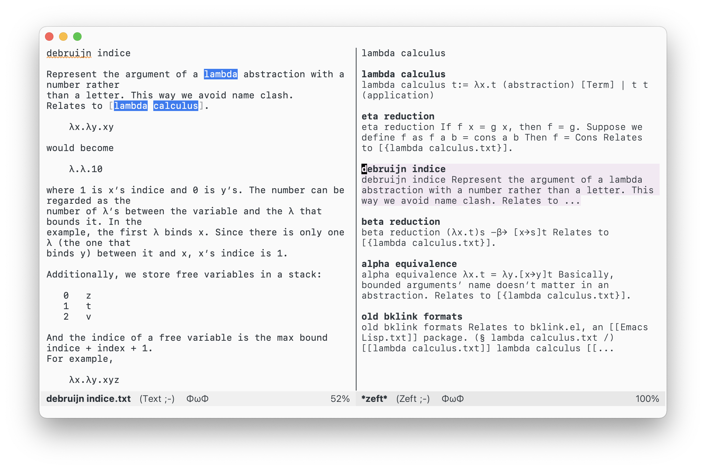

Yet Another Note Searching Interface: Zeft
Table of Contents
If you haven’t heard of it already, Deft is a note searching interface in Emacs written by Jason Blevins. It is inspired by Notational Velocity on Mac. Deft provides an incredibly smooth workflow and is simply a joy to use.
However, if Deft is perfect, I won’t be writing a new one to replace it. Deft made two design decisions. While ingenious, these designs bring problems that I can’t easily workaround. First, instead of letting the user insert the search phrase as normal text, Deft decides to capture all key presses and construct the search phrase itself. This allows the point to be anywhere in the buffer while updating the search phrase. However, it prohibits any Emacs input method from working. And I can’t select the search phrase like normal buffer text.
Second, Deft decides to load all files into memory and simply search in them when filtering. This consumes reasonable resources and works well. However, it does make Deft hang for a second or two on first-time startup. And a mortal like me can’t help but worry about the memory used for storing all these files (right now Deft uses 17 MB out of the ~200 MB that Emacs consumes, but what would it be after a few years?).
Meanwhile, I’ve been using Apple’s Note.app on my iPhone and Mac, and it has some nice features I wish Deft could have. So why not take this opportunity to make my wish come true?
Introducing Zeft
If you have used Deft and Note.app before, everything should be familiar, because Zeft is their bastard child.

On the right you see the search pane. Whatever on the first line is considered the search phrase—it is just normal buffer text so input methods and all normal text editing commands work. Below it are search results similar to what you see in Note.app. Each result contains the title and an excerpt of the file content. On the left is the content of the selected file. In that buffer, matched search terms are highlighted, again, like in Note.app.
You can press C-p/n to move the selection up and down, or click on a result with mouse. Pressing RET creates a new file with the search term as title.
Clearly, Zeft has far less features and custom options than Deft, but that’s ok. Zeft has everything I need and takes only ~400 lines of code, which is around 1/4 of Deft’s size.
Here is a demo:
Implementation details
The implementation consists of two parts: searching for the file and displaying the results. For searching, I used the same strategy as in bklink.el: do two searches, first an estimate search with grep, then a concise search within Emacs. Grep can’t handle complex search conditions and searching within Emacs is rather slow. But combined, they can complete a search in reasonable time.
For example, if the search term is “lambda calculus note”. We separate the term into keywords: “lambda”, “calculus”, and “note”. Then we start a grep process that matches the first keyword (grep lambda <files>). Once we get a list of matched files, we load each file into a buffer and try to search for “calculus” and “note” in it. If both are present in the buffer, it is a true match.
Once we have a list of matched files, Zeft goes through each of them and inserts the title and an excerpt into the Zeft buffer, then makes the whole thing a giant button.
Need for speed
Zeft uses a few tricks to make searching and updating snappier. First, it only searches when the search term is at least three characters long, because one or two characters usually matches hundreds of files and the result is generally useless. (But you can always force a search with C-c C-g.)
The second trick is borrowed from Deft: when the user inserts the search phrase, the phrase becomes longer incrementally and Zeft needs to update the result of each new phrase. Observe that if the new search phrase is just the previous search phrase plus a character, files that match the new phrase must match the old phrase. In other words, the set of new matched files is a subset of the previous one. Therefore, instead of searching in all the files every time, we can search only in previously matched files. On top of that, if the previous matched list has fewer than 50 files, Zeft skips the grep search and just searches in Emacs.
User interaction details
As in other packages I wrote, I try to get the details right and make sure Zeft suits my habits. For example, I hate dangling buffers and windows that requires manual cleanup, so I want Zeft to kill all buffers and windows it created when it quits. I got an imitation of that by window configurations: when Zeft starts up, it saves the current window configuration, and when the Zeft buffer is killed, Zeft restores that window configuration. This is easier than tracking all the buffers and windows Zeft created and deciding whether to kill or bury each buffer and whether to delete each window.
;; Save the window confiuration. (defun zeft () (interactive) (setq zeft--last-window-config (current-window-configuration)) ...) ;; Restore the window configuration. ;; (in zeft-mode) (add-hook 'kill-buffer-hook (lambda () (when zeft--last-window-config (set-window-configuration zeft--last-window-config))) 0 t)
When Zeft tries to display a file, it first tries to reuse a window; if there is only one window, it tries to split a window to the right and makes sure that window is at least 50 characters wide; if that’s infeasible, Zeft just tries to display the file in some way.
;; First try ‘display-buffer-use-some-window’, ;; then ‘display-buffer-in-direction’, ;; finally try ‘display-buffer-pop-up-window’. (display-buffer buffer '((display-buffer-use-some-window display-buffer-in-direction display-buffer-pop-up-window) . ((inhibit-same-window . t) (direction . right) (window-width . (lambda (win) (let ((width (window-width))) (when (< width 50) (window-resize win (- 50 width) t))))))))
Show me the code
As always, here is the local backup and GitHub link.